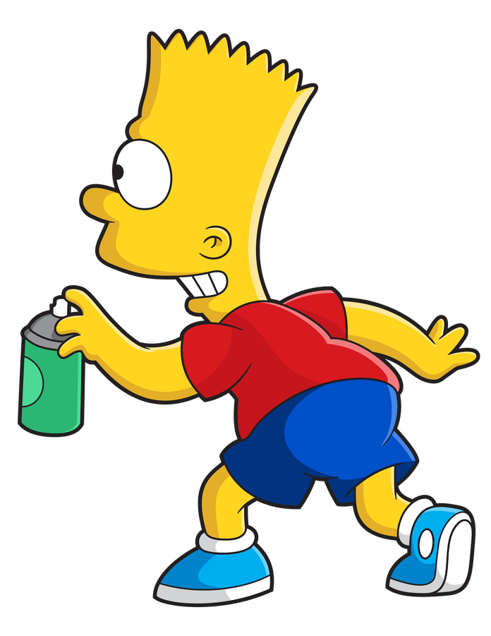
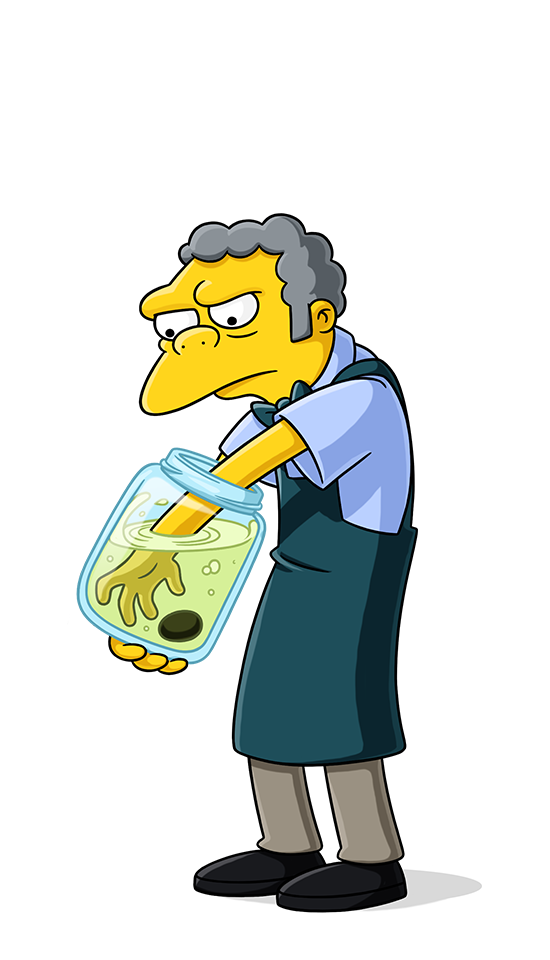

Of Birth: 22nd May (year doesn't matter, he is eternally 10)
Email: Ash@billsPC.com
Address: House on the left, Pallet Town, Kanto
According to Bulbapedia:
Ash is a Pokémon Trainer from Pallet Town whose goal is to become a Pokémon Master.
His starter Pokémon was a Pikachu that he received from Professor Oak.
He is the first ever Champion of the Alola region's Pokémon League.
Battle Frontier - Kanto
Defeated seven Frontier Brains offered the opportunity to become a Frontier Brain
Rocket Slayer - Worldwide!
It looks like they are blasting off again!
|
|
|  | |
|  |